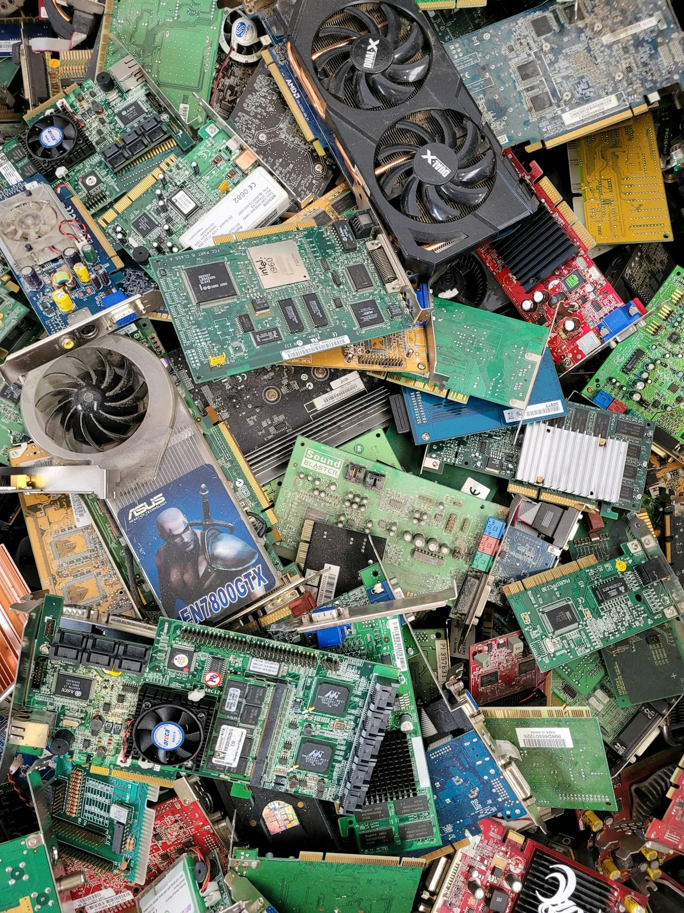

E-waste removal in Winnipeg
electronics
Most of this is banned from the landfill anyway
Televisions, monitors, desktops, laptops, printers, stereo gear, cables and satellite dishes. Most electronics cannot legally go into Manitoba landfills because of the lead, mercury and flame retardants in them — which is exactly why the old tube TV is still sitting in your basement.

Everything we collect goes to a certified EPRA Manitoba e-waste recycler, where the metals, glass and plastics get separated and the hazardous components are handled properly.
What we do
- TVs of any vintage, including the heavy CRT sets
- Monitors, desktops, laptops, tablets and printers
- Stereo equipment, speakers, cables and peripherals
- Satellite dishes, including taking them off the wall
- Delivered to a certified EPRA Manitoba recycler
Everything we take in this category
- Television
- Most electronics are banned from Manitoba landfills because of the metals and flame retardants inside, so every TV goes to certified recycling. Flat screens are light but fragile, and a cracked panel is a mess to carry.Also: TV, Flat screen TV, LED TV, LCD TV, Smart TV
- Tube TV
- The heaviest, most awkward thing in this category. A 32-inch tube set can pass 100 lbs, and rear-projection sets are the size of furniture. These are exactly the reason people call instead of dealing with it themselves.Also: CRT TV, CRT television, Old TV, Big screen TV, Rear projection TV, Console TV
- Plasma TV
- Heavier than an LED set of the same size, with a glass panel that does not like being flexed. It is carried upright.Also: Plasma television
- Computer
- Pull the hard drive before we take it, or destroy it. We do not wipe drives, and you should not assume anyone later in the chain will either. That is the only data advice we can actually stand behind.Also: Desktop computer, Laptop, Tower, PC, Mac, Server
- Monitor
- Goes with the computer to certified e-waste recycling.Also: Computer monitor, Screen
- Printer
- Office copiers are heavy and ride on casters that were never built for stairs. Pull any toner cartridges you want to recycle separately.Also: Scanner, Copier, Photocopier, Fax machine, All-in-one printer
- Stereo
- Big floor speakers are mostly wood and magnet, and weigh accordingly.Also: Speakers, Receiver, Amplifier, Subwoofer, Record player, Turntable
- DVD player
- Small and light, and all of it goes to certified e-waste recycling rather than general disposal.Also: VCR, Blu-ray player, Cable box, Satellite receiver, Projector, Game console
- Cables
- The tangle in the drawer. Bag it and it goes with everything else.Also: Cords, Wires, Keyboard, Mouse, Chargers, Power bars, Remotes
- Cell phone
- Take out the SIM card and factory-reset the device first. The battery inside goes to the proper recycling stream.Also: Cell phones, Smartphone, Tablet, Old phones
- Satellite dish
- Taken down if it is still mounted, as long as it can be reached safely from a ladder. Roof work beyond that needs someone with fall protection.Also: TV antenna, Antenna, TV dish
- TV wall mount
- Unbolted and taken with the TV. We leave the anchors in the wall unless you ask otherwise.Also: TV bracket, Wall bracket
- Light bulbs
- Fluorescent tubes and compact fluorescents contain a little mercury, so they need to arrive unbroken. Keep them in their boxes or tape them together. They go to proper recycling, not loose on the trailer floor.Also: CFL bulbs, Fluorescent tubes, LED bulbs
- Household batteries
- Bag them, and tape the ends of any lithium or 9-volt batteries so they cannot short. Swollen or leaking batteries are a different matter: call us first.Also: AA batteries, Rechargeable batteries
Not on the list? Check everything we take, A to Z, or text us a photo and we will tell you straight.
What it costs
Small e-waste loads are inexpensive, and they often ride along with a bigger cleanout for very little extra. Free quote either way.
Get a free quoteWipe your own drives
We do not erase hard drives, and you should not assume any recycler will either. Pull the drive out of the tower before we take it, or destroy it physically. That is the only advice on this we can actually stand behind.